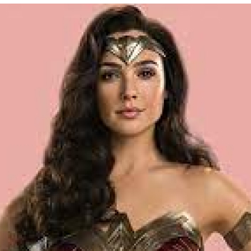
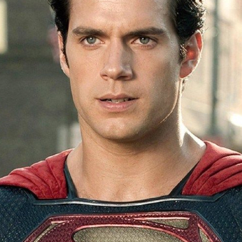
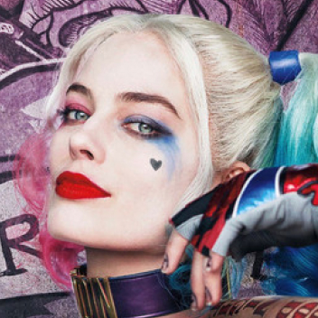

Batman (conocido inicialmente como Bat-Man) es un personaje
creado por los estadounidenses Bob Kane y Bill Finger, y propiedad
de DC Comics. Apareció por primera vez en la historia titulada «El
caso del sindicato químico» de la revista Detective Comics N.º 27,
lanzada por la editorial National Publications el 30/3/1939.
Ver mas

MUJER MARAVILLA
Es una superheroína creada por William Moulton Marston para la
editorial DC Comics. Es una princesa guerrera de las Amazonas,
pueblo ficticio basado en el de las amazonas de la mitología
griega. En su tierra natal es conocida como la princesa Diana de
Temiscira pero fuera de esta utiliza la identidad secreta de Diana
Prince.
Ver mas

SUPERMAN
Es un superhéroe que apareció por primera vez en los cómics
estadounidenses publicados por DC Comics. El personaje fue
creado por el escritor estadounidense Jerry Siegel y el artista
canadiense Joe Shuster en 1933 cuando ambos se encontraban
viviendo en Cleveland, Ohio.
Ver mas

Harley Quinn
Harley Quinn es un personaje ficticio creado por los
estadounidenses Paul Dini y Bruce Timm para la editorial DC
Comics. Quinn hizo su debut en el vigésimo-segundo episodio de
Batman: la serie animada, «El favor del Joker», en septiembre de
1992 y se convirtió en una villana recurrente en la serie